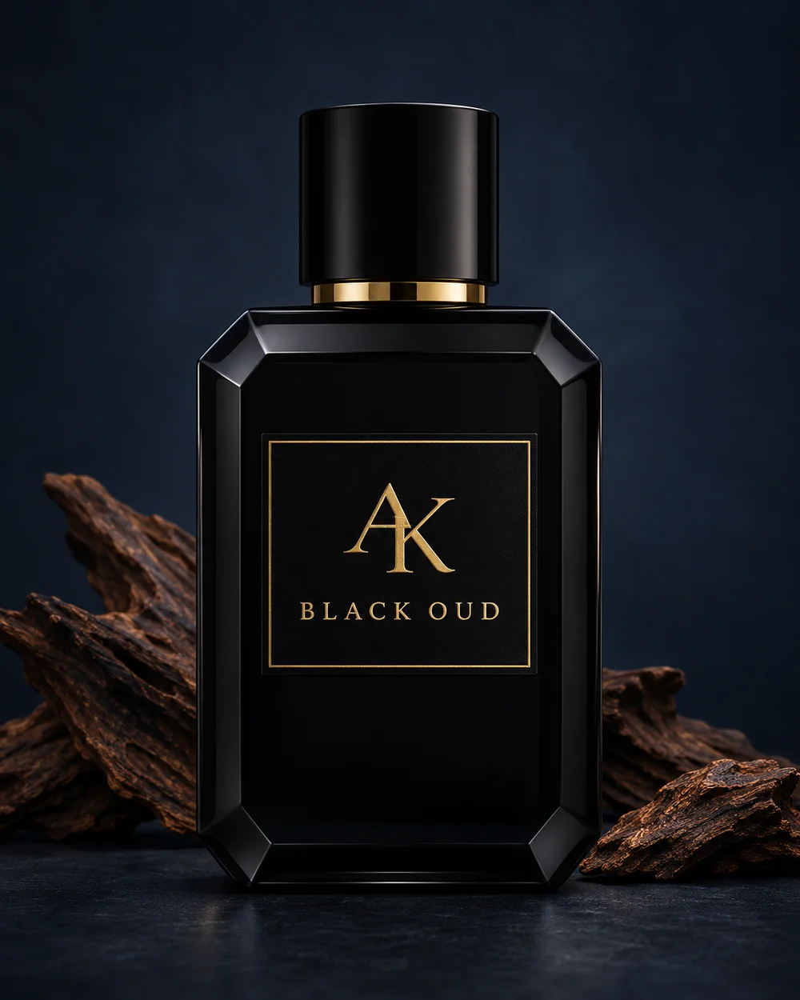

Scents worth talking about.
Priya S.Royal Amber · Sample review
Warm from the first spray. The amber softens as it settles and feels even better close to the skin.

Arjun M.Ocean Breeze · Sample review
Fresh and airy, like opening the windows first thing in the morning. It’s an easy one to reach for.
Meera R.Sandalwood · Sample review
A little on each wrist is enough. The sandalwood has a quiet warmth that stays close.

Karthik V.Black Oud · Sample review
Deep and woody with a smoky finish. It feels right for a dinner out.
Ananya D.Floral Dream · Sample review
Soft and floral, with the freshness of a bunch of flowers just brought home.
Nisha K.Vanilla Noir · Sample review
The vanilla feels mellow and warm. I’d wear this with my favourite sweater on a rainy evening.